← 本轮 smoke 总览traex/DeepSeek-V4.1-Flash · 0022
vision-agent · 256×144 · 4.0 FPS · 20 帧 · 状态 complete · 输出 tokens 24989
原始任务Static locked-off single-shot with fixed frame throughout filmed with constant framerate in real-time. The scene shows a realistic scientific demonstration. The scene only contains the described setup and actions. A light wood coffee table in the foreground with a black pipe on the left end of the table. The grey tennis ball rolls out of the pipe over the entire table towards the right.
当前保存结果
已保存候选与代码修改
这里按时间展示外部捕获的候选，每份均可单独播放。保存新版本不等于完成视觉检查；下方工具证据记录实际看过的图。
候选 01 · 2026-11-08T21:23:58.898266+00:00 · 点开播放与检查图
inspection.png

transition_check.png

代码变化
--- 上一保存版本
+++ 本次保存版本
@@ -0,0 +1,169 @@
+"""Generate a locked-off rolling-ball continuation for PixelWorld case 0022."""
+
+from pathlib import Path
+
+import cv2
+import numpy as np
+from PIL import Image
+
+from artifact_io import save
+
+
+CASE_DIR = Path(__file__).resolve().parent
+WIDTH = 256
+HEIGHT = 144
+FRAMES = 20
+FPS = 4
+
+# The supplied ball is a 14 px sphere near the middle of the table.
+START_X = 163.2
+BALL_Y = 79.6
+BALL_RADIUS = 7.0
+
+
+def make_clean_plate(frame: np.ndarray) -> np.ndarray:
+ """Remove the supplied ball and its contact shadow from the tabletop."""
+ mask = np.zeros((HEIGHT, WIDTH), dtype=np.uint8)
+ cv2.ellipse(mask, (163, 80), (9, 9), 0, 0, 360, 255, -1)
+ cv2.ellipse(mask, (164, 84), (14, 6), -5, 0, 360, 255, -1)
+ mask = cv2.dilate(mask, np.ones((3, 3), np.uint8), iterations=1)
+ clean = cv2.inpaint(frame, mask, 4, cv2.INPAINT_TELEA)
+
+ # A very light blur in the repaired area hides the inpainting seam without
+ # disturbing the original table grain elsewhere.
+ soft = cv2.GaussianBlur(clean, (3, 3), 0.55)
+ feather = cv2.GaussianBlur(mask.astype(np.float32) / 255.0, (5, 5), 1.0)
+ feather = np.clip(feather * 1.35, 0.0, 1.0)[..., None]
+ return np.rint(clean * (1.0 - feather) + soft * feather).astype(np.uint8)
+
+
+def shadow_alpha(cx: float, cy: float) -> np.ndarray:
+ """Soft, slightly right-shifted contact shadow on the table plane."""
+ yy, xx = np.mgrid[0:HEIGHT, 0:WIDTH].astype(np.float32)
+ x = xx - (cx + 1.7)
+ y = yy - (cy + 3.7)
+
+ # Broad ambient shadow plus a tighter contact core.
+ broad = np.exp(-0.5 * ((x / 8.2) ** 2 + (y / 3.4) ** 2))
+ contact = np.exp(-0.5 * (((x - 0.2) / 4.2) ** 2 + ((y + 0.5) / 1.8) ** 2))
+ alpha = 0.20 * broad + 0.18 * contact
+ return np.clip(alpha, 0.0, 0.36)
+
+
+def render_ball(cx: float, cy: float, angle: float, scale: int = 8) -> tuple[np.ndarray, np.ndarray]:
+ """Render an antialiased grey tennis ball and its coverage mask."""
+ size = 2 * int(np.ceil(BALL_RADIUS * scale + 4))
+ yy, xx = np.mgrid[0:size, 0:size].astype(np.float32)
+ px = (xx - size / 2 + 0.5) / (BALL_RADIUS * scale)
+ py = (yy - size / 2 + 0.5) / (BALL_RADIUS * scale)
+ rr = px * px + py * py
+ inside = rr <= 1.0
+
+ # Supersampled circular coverage.
+ coverage = np.clip((1.0 - np.sqrt(rr)) * BALL_RADIUS * scale + 0.5, 0.0, 1.0)
+ coverage[~inside] = 0.0
+
+ pz = np.sqrt(np.clip(1.0 - rr, 0.0, 1.0))
+ normal = np.stack((px, py, pz), axis=-1)
+
+ key = np.array([-0.45, -0.63, 0.64], dtype=np.float32)
+ key /= np.linalg.norm(key)
+ fill = np.array([0.80, 0.10, 0.58], dtype=np.float32)
+ fill /= np.linalg.norm(fill)
+ diffuse = np.clip(normal @ key, 0.0, 1.0)
+ fill_light = np.clip(normal @ fill, 0.0, 1.0)
+
+ # Cool window reflection at the upper right, as in the supplied frame.
+ highlight_dir = np.array([0.30, -0.55, 0.78], dtype=np.float32)
+ highlight_dir /= np.linalg.norm(highlight_dir)
+ specular = np.clip(normal @ highlight_dir, 0.0, 1.0) ** 20
+
+ # A fine fuzzy surface and a faint, rotating tennis-ball seam.
+ texture_rng = np.random.default_rng(22)
+ noise = texture_rng.normal(0.0, 1.0, (size, size)).astype(np.float32)
+ noise = cv2.GaussianBlur(noise, (0, 0), 0.7)
+ noise /= max(float(np.std(noise)), 1e-5)
+
+ ca, sa = np.cos(angle), np.sin(angle)
+ # Rotate the local pattern around the image-plane's vertical axis.
+ tx = ca * px + sa * pz
+ ty = py
+ seam_normal = np.array([0.82, -0.12, 0.56], dtype=np.float32)
+ seam_normal /= np.linalg.norm(seam_normal)
+ seam_distance = np.abs(tx * seam_normal[0] + ty * seam_normal[1] + pz * seam_normal[2])
+ seam_width = 0.075 + 0.025 * np.abs(ty)
+ seam = np.exp(-0.5 * (seam_distance / seam_width) ** 2)
+
+ base = np.empty((size, size, 3), dtype=np.float32)
+ base[..., 0] = 101.0 + 43.0 * diffuse + 16.0 * fill_light
+ base[..., 1] = 106.0 + 49.0 * diffuse + 14.0 * fill_light
+ base[..., 2] = 114.0 + 49.0 * diffuse + 20.0 * fill_light
+
+ base += (noise * 4.8)[..., None]
+ base += (seam * 13.0)[..., None]
+ base[..., 0] += specular * 24.0
+ base[..., 1] += specular * 38.0
+ base[..., 2] += specular * 57.0
+
+ # Darken the lower rim to seat the ball against the table.
+ contact_ao = np.clip((py - 0.30) / 0.70, 0.0, 1.0) * np.clip(1.0 - pz, 0.0, 1.0)
+ base -= (contact_ao * 26.0)[..., None]
+ base = np.clip(base, 0.0, 255.0)
+
+ alpha = coverage[..., None]
+ rgba = np.dstack((base, coverage * 255.0))
+ return rgba.astype(np.float32), alpha
+
+
+def composite_ball(frame: np.ndarray, cx: float, cy: float, angle: float) -> np.ndarray:
+ scale = 8
+ rgba, alpha = render_ball(cx, cy, angle, scale)
+ size = rgba.shape[0]
+ out_h = size // scale
+ out_w = size // scale
+
+ rgb = rgba[..., :3]
+ rgb_small = cv2.resize(rgb, (out_w, out_h), interpolation=cv2.INTER_AREA)
+ a_small = cv2.resize(alpha, (out_w, out_h), interpolation=cv2.INTER_AREA)
+
+ left = int(round(cx - out_w / 2.0))
+ top = int(round(cy - out_h / 2.0))
+ x0, x1 = max(0, left), min(WIDTH, left + out_w)
+ y0, y1 = max(0, top), min(HEIGHT, top + out_h)
+ sx0, sy0 = x0 - left, y0 - top
+ sx1, sy1 = sx0 + (x1 - x0), sy0 + (y1 - y0)
+
+ region = frame[y0:y1, x0:x1].astype(np.float32)
+ a = a_small[sy0:sy1, sx0:sx1, None]
+ color = rgb_small[sy0:sy1, sx0:sx1]
+ frame[y0:y1, x0:x1] = np.rint(region * (1.0 - a) + color * a).astype(np.uint8)
+ return frame
+
+
+def generate() -> np.ndarray:
+ first = np.asarray(Image.open(CASE_DIR / "first_frame.png").convert("RGB"))
+ clean_plate = make_clean_plate(first)
+ frames = np.empty((FRAMES, HEIGHT, WIDTH, 3), dtype=np.uint8)
+
+ for index in range(FRAMES):
+ if index == 0:
+ frames[index] = first
+ continue
+
+ t = index / FPS
+ # The ball has already left the pipe in frame 00. A little rolling
+ # resistance gives a natural speed reduction while crossing the table.
+ cx = START_X + 20.0 * t - 0.40 * t * t
+ angle = (cx - START_X) / BALL_RADIUS
+
+ frame = clean_plate.astype(np.float32)
+ alpha = shadow_alpha(cx, BALL_Y)
+ frame *= (1.0 - alpha)[..., None]
+ frame = np.clip(frame, 0.0, 255.0).astype(np.uint8)
+ frames[index] = composite_ball(frame, cx, BALL_Y, angle)
+
+ return frames
+
+
+if __name__ == "__main__":
+ save(generate(), CASE_DIR)
候选 02 · 2026-11-08T21:25:29.093534+00:00 · 点开播放与检查图
inspection.png
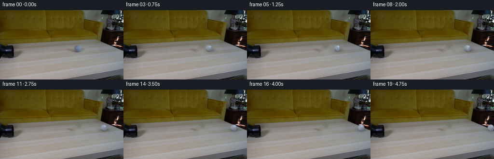
transition_check.png
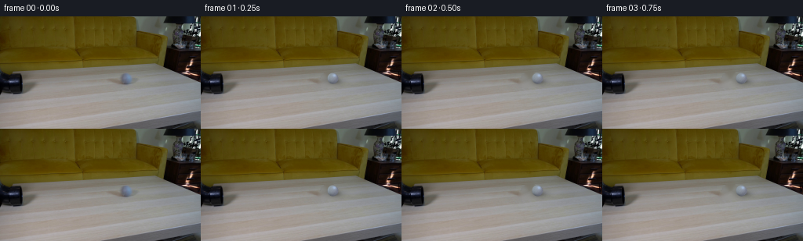
代码变化
--- 上一保存版本
+++ 本次保存版本
@@ -26,15 +26,13 @@
mask = np.zeros((HEIGHT, WIDTH), dtype=np.uint8)
cv2.ellipse(mask, (163, 80), (9, 9), 0, 0, 360, 255, -1)
cv2.ellipse(mask, (164, 84), (14, 6), -5, 0, 360, 255, -1)
- mask = cv2.dilate(mask, np.ones((3, 3), np.uint8), iterations=1)
+ mask = cv2.dilate(mask, np.ones((5, 5), np.uint8), iterations=1)
clean = cv2.inpaint(frame, mask, 4, cv2.INPAINT_TELEA)
- # A very light blur in the repaired area hides the inpainting seam without
- # disturbing the original table grain elsewhere.
- soft = cv2.GaussianBlur(clean, (3, 3), 0.55)
- feather = cv2.GaussianBlur(mask.astype(np.float32) / 255.0, (5, 5), 1.0)
- feather = np.clip(feather * 1.35, 0.0, 1.0)[..., None]
- return np.rint(clean * (1.0 - feather) + soft * feather).astype(np.uint8)
+ # Feather only the edge of the repair so the table grain remains intact.
+ feather = cv2.GaussianBlur(mask.astype(np.float32) / 255.0, (7, 7), 1.25)
+ feather = np.clip(feather * 1.7, 0.0, 1.0)[..., None]
+ return np.rint(frame * (1.0 - feather) + clean * feather).astype(np.uint8)
def shadow_alpha(cx: float, cy: float) -> np.ndarray:
@@ -95,11 +93,11 @@
seam = np.exp(-0.5 * (seam_distance / seam_width) ** 2)
base = np.empty((size, size, 3), dtype=np.float32)
- base[..., 0] = 101.0 + 43.0 * diffuse + 16.0 * fill_light
- base[..., 1] = 106.0 + 49.0 * diffuse + 14.0 * fill_light
- base[..., 2] = 114.0 + 49.0 * diffuse + 20.0 * fill_light
+ base[..., 0] = 84.0 + 45.0 * diffuse + 14.0 * fill_light
+ base[..., 1] = 92.0 + 49.0 * diffuse + 14.0 * fill_light
+ base[..., 2] = 105.0 + 48.0 * diffuse + 20.0 * fill_light
- base += (noise * 4.8)[..., None]
+ base += (noise * 3.6)[..., None]
base += (seam * 13.0)[..., None]
base[..., 0] += specular * 24.0
base[..., 1] += specular * 38.0
候选 03 · 2026-11-08T21:25:31.031722+00:00 · 点开播放与检查图
inspection.png
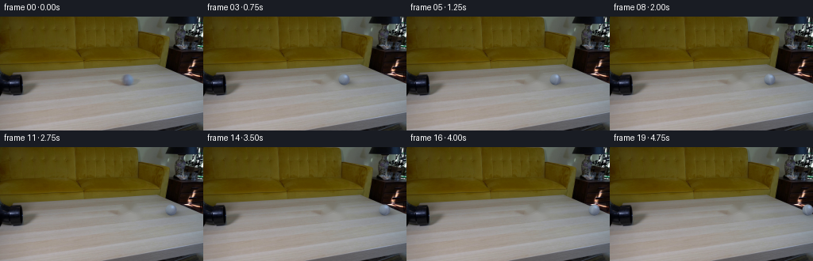
transition_check.png
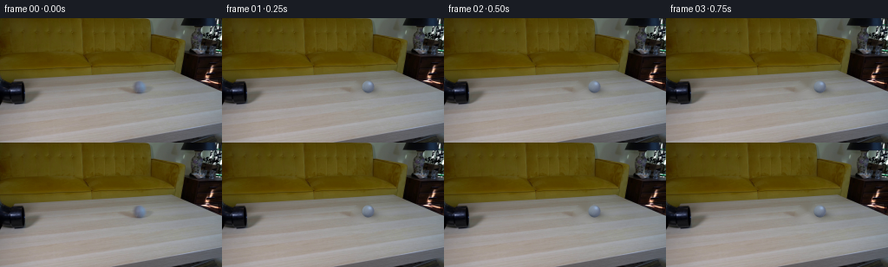
代码变化
代码未变化；重新保存了产物。
可观测工具行为
命令 1 · 2026-11-08T21:21:48.770072+00:00/bin/bash -c "pwd && rg --files -g 'prompt.txt' -g 'GENERATION_RULES.md' -g '"'!node_modules'"' -g '"'!vendor'"'"
exit 0 命令 2 · 2026-11-08T21:21:48.999079+00:00/bin/bash -c "ls -la && find . -maxdepth 2 -type f -printf '%p %s bytes\\n' | sort"
exit 0 命令 3 · 2026-11-08T21:21:49.288347+00:00/bin/bash -c 'command -v ffmpeg; command -v ffprobe; command -v python3; command -v node; command -v npm'
exit 0 命令 4 · 2026-11-08T21:21:56.685502+00:00/bin/bash -c 'cat prompt.txt'
exit 0 命令 5 · 2026-11-08T21:21:56.859041+00:00/bin/bash -c 'cat GENERATION_RULES.md'
exit 0 命令 6 · 2026-11-08T21:21:56.959310+00:00/bin/bash -c "sed -n '1,260p' artifact_io.py"
exit 0 命令 7 · 2026-11-08T21:21:57.282460+00:00/bin/bash -c "sed -n '1,260p' player_template.html"
exit 0 命令 8 · 2026-11-08T21:22:07.248911+00:00/bin/bash -c 'command -v convert; command -v magick; command -v montage; python3 -c "import PIL,numpy; print(PIL.__version__, numpy.__version__)"'
exit 0 命令 9 · 2026-11-08T21:22:11.666457+00:00/bin/bash -c "python3 - <<'PY'
from PIL import Image
im=Image.open('first_frame.png')
print(im.size, im.mode)
for xy in [(0,0),(128,72),(160,75),(162,72),(162,76),(150,75),(170,75),(100,90),(200,100),(240,130),(20,100)]: print(xy, im.getpixel(xy))
PY"exit 0 命令 10 · 2026-11-08T21:22:16.087742+00:00/bin/bash -c "python3 - <<'PY'
from PIL import Image
im=Image.open('first_frame.png')
im.resize((1024,576), Image.Resampling.NEAREST).save('.tmp/first_frame_4x.png')
PY"exit 0 命令 11 · 2026-11-08T21:22:26.969035+00:00/bin/bash -c "python3 - <<'PY'
from PIL import Image
im=Image.open('first_frame.png')
im.crop((130,52,200,100)).resize((700,480), Image.Resampling.NEAREST).save('.tmp/ball_crop.png')
PY"exit 0 命令 12 · 2026-11-08T21:22:46.466337+00:00/bin/bash -c "python3 - <<'PY'
mods=['cv2','scipy','skimage','numba','imageio']
for m in mods:
try:
x=__import__(m); print(m, getattr(x,'__version__','ok'))
except Exception as e: print(m, 'NO', type(e).__name__)
PY"
exit 0 命令 13 · 2026-11-08T21:23:00.624532+00:00/bin/bash -c "python3 - <<'PY'
from PIL import Image
import numpy as np
im=np.array(Image.open('first_frame.png'))
# print RGB grid for ball region x152..173 y64..85
for y in range(64,86):
print(f'{y:3}', end=' ')
for x in range(150,176):
r,g,b=im[y,x]
# classify ball bright bluish or dark shadow
if b>r+12 and b>g+2: c='B'
elif r>145 and g>145 and b>140: c='o'
elif r>130 and g>130 and b>125: c='.'
elif r<95 and g<95 and b<95: c='#'
else: c=' '
print(c,end='')
print()
PY"exit 0 命令 14 · 2026-11-08T21:23:04.952746+00:00/bin/bash -c "python3 - <<'PY'
from PIL import Image
import numpy as np
im=np.array(Image.open('first_frame.png'))
for y in range(70,90):
print(f'{y:3}', ' '.join(f'{im[y,x,0]:3},{im[y,x,1]:3},{im[y,x,2]:3}' for x in range(153,173)))
PY"exit 0 命令 15 · 2026-11-08T21:23:09.028147+00:00/bin/bash -c "python3 - <<'PY'
import cv2
im=cv2.imread('first_frame.png')
print(cv2.__version__)
print('cuda', cv2.cuda.getCudaEnabledDeviceCount())
print('videowriter fourcc avc1 test')
PY"exit 0 命令 16 · 2026-11-08T21:23:57.563092+00:00/bin/bash -c 'python3 generate.py'
exit 0 命令 17 · 2026-11-08T21:24:08.858155+00:00/bin/bash -c "python3 - <<'PY'
from PIL import Image, ImageDraw
import numpy as np
im0=np.array(Image.open('first_frame.png'))
im1=np.array(Image.open('frames/00.png'))
print('frame00 exact:', np.array_equal(im0,im1))
idxs=[0,1,3,6,10,14,17,19]
sheet=Image.new('RGB',(4*512,2*288+40),(20,20,24)); d=ImageDraw.Draw(sheet)
for k,i in enumerate(idxs):
im=Image.open(f'frames/{i:02d}.png')
x=(k%4)*512;y=(k//4)*(288+20)+20
sheet.paste(im.resize((512,288),Image.Resampling.NEAREST),(x,y));d.text((x+4,y-16),f'frame {i:02d}',fill='white')
sheet.save('.tmp/review_4x.png')
PY"exit 0 命令 18 · 2026-11-08T21:24:25.394798+00:00/bin/bash -c "python3 - <<'PY'
from PIL import Image
import numpy as np
for name in ['first_frame.png','frames/01.png','frames/03.png']:
im=np.array(Image.open(name)).astype(float)
# center according to frames
cx=163 if name=='first_frame.png' else (168.1 if '01' in name else 177.6)
yy,xx=np.mgrid[:144,:256]
m=(xx-cx)**2+(yy-79.6)**2<6.5**2
p=im[m]
print(name, 'n',len(p),'mean',p.mean(0).round(1),'std',p.std(0).round(1),'min',p.min(0),'max',p.max(0))
print('quantiles',np.quantile(p,[.1,.5,.9],axis=0).round(0))
PY"exit 0 命令 19 · 2026-11-08T21:24:34.135868+00:00/bin/bash -c "python3 - <<'PY'
import numpy as np
from PIL import Image
for i in range(20):
a=np.array(Image.open(f'frames/{i:02d}.png')).astype(int)
# target pixels bluer than table; restrict lower table y 68:92
yy,xx=np.mgrid[:144,:256]
m=(yy>68)&(yy<92)&(a[:,:,2]-a[:,:,0]>15)&(a[:,:,2]-a[:,:,1]>5)
if m.any(): print(i, xx[m].min(),xx[m].max(), yy[m].min(),yy[m].max(), 'center',xx[m].mean().round(2),yy[m].mean().round(2),'n',m.sum())
PY"exit 0 命令 20 · 2026-11-08T21:24:38.690085+00:00/bin/bash -c "python3 - <<'PY'
import numpy as np
from PIL import Image
im=np.array(Image.open('first_frame.png')).astype(float)
# Print radial table profile for clean regions around ball to estimate texture/lighting
for y in [68,72,76,80,84,88,92,100,110]:
print(y, ' '.join(str(tuple(im[y,x].astype(int))) for x in [50,90,130,190,220]))
PY"exit 0 命令 21 · 2026-11-08T21:24:43.016845+00:00/bin/bash -c "python3 - <<'PY'
from PIL import Image
import numpy as np
first=np.array(Image.open('first_frame.png'))
im=np.array(Image.open('frames/01.png'))
a=np.concatenate([first[:, :100], im[:, :100], first[:, 100:]],axis=1)
Image.fromarray(a).resize((768,432),Image.Resampling.NEAREST).save('.tmp/compare_f0_f1.png')
PY"exit 0 命令 22 · 2026-11-08T21:24:52.717560+00:00/bin/bash -c "python3 - <<'PY'
from PIL import Image, ImageDraw
sheet=Image.new('RGB',(1400,720),(20,20,24));d=ImageDraw.Draw(sheet)
for k,i in enumerate([0,1,3,6,10,14,17,19]):
im=Image.open(f'frames/{i:02d}.png').crop((max(0,140+i*2),62,min(256,184+i*2),98))
# all crop to 112x36, resize 350x360? 2 cols x 4 rows
x=(k%2)*700;y=(k//2)*180+20
sheet.paste(im.resize((672,216),Image.Resampling.NEAREST),(x,y)); d.text((x+4,y-16),f'frame {i}',fill='white')
sheet.save('.tmp/ball_frames.png')
PY"exit 0 命令 23 · 2026-11-08T21:25:00.269160+00:00/bin/bash -c 'ls -lh task_spec.json frames pixels.npz index.html inspection.png transition_check.png 2>/dev/null; git status --short 2>/dev/null || true'
exit 0 命令 24 · 2026-11-08T21:25:05.213527+00:00/bin/bash -c "python3 - <<'PY'
from PIL import Image
import numpy as np
first=np.array(Image.open('first_frame.png'))
for i in range(20):
a=np.array(Image.open(f'frames/{i:02d}.png'))
# pixels changed excluding ball and immediate shadow (broad area x156..171 y68..91)
diff=np.any(a"'!=first,axis=2)
yy,xx=np.mgrid[:144,:256]
outside=diff & ~((xx>=154)&(xx<=173)&(yy>=66)&(yy<=92))
print(f'"'{i:02d}: changed={diff.sum():5d} outside_original_ball={outside.sum():4d}')
PY"exit 0 命令 25 · 2026-11-08T21:25:12.176529+00:00/bin/bash -c "python3 - <<'PY'
import numpy as np, cv2
from PIL import Image
first=np.array(Image.open('first_frame.png'))
im=np.array(Image.open('frames/01.png'))
d=np.abs(im.astype(int)-first.astype(int)).max(2)
# changed pixels in original ball area and current ball area
ys,xs=np.where(d>0)
print('bbox',xs.min(),xs.max(),ys.min(),ys.max())
# outside circle current radius 8 and original radius 8
m=((xs-163.2)**2+(ys-79.6)**2>8**2)&((xs-168.1)**2+(ys-79.6)**2>8**2)
print('outside balls',m.sum())
if m.any(): print('bbox out',xs[m].min(),xs[m].max(),ys[m].min(),ys[m].max(),'maxdiff',d[ys[m],xs[m]].max())
# save amplified diff
amp=np.clip(d*5,0,255).astype(np.uint8)
Image.fromarray(amp).resize((1024,576),Image.Resampling.NEAREST).save('.tmp/diff_f0_f1_x5.png')
PY"exit 0 命令 26 · 2026-11-08T21:25:28.780843+00:00/bin/bash -c 'python3 generate.py'
exit 0 命令 27 · 2026-11-08T21:25:33.773815+00:00/bin/bash -c "python3 - <<'PY'
from PIL import Image
import numpy as np
for name,cx in [('first_frame.png',163.2),('frames/01.png',168.1),('frames/06.png',195.4)]:
im=np.array(Image.open(name)).astype(float)
yy,xx=np.mgrid[:144,:256]
m=(xx-cx)**2+(yy-79.6)**2<6.5**2
p=im[m]
print(name, 'mean',p.mean(0).round(1),'std',p.std(0).round(1),'min',p.min(0),'max',p.max(0))
PY"exit 0 命令 28 · 2026-11-08T21:25:39.539896+00:00/bin/bash -c "python3 - <<'PY'
from PIL import Image, ImageDraw
import numpy as np
first=np.array(Image.open('first_frame.png'))
idxs=[0,1,3,6,10,14,17,19]
sheet=Image.new('RGB',(4*512,2*288+40),(20,20,24)); d=ImageDraw.Draw(sheet)
for k,i in enumerate(idxs):
im=Image.open(f'frames/{i:02d}.png')
x=(k%4)*512;y=(k//4)*(288+20)+20
sheet.paste(im.resize((512,288),Image.Resampling.NEAREST),(x,y));d.text((x+4,y-16),f'frame {i:02d}',fill='white')
sheet.save('.tmp/review_4x_v2.png')
# enlarged crops around path with contrast
crop=Image.new('RGB',(4*512,2*160+40),(20,20,24));d=ImageDraw.Draw(crop)
for k,i in enumerate(idxs):
im=Image.open(f'frames/{i:02d}.png')
cx=163.2+20*(i/4)-.4*(i/4)**2
box=(int(cx-25),int(79.6-17),int(cx+25),int(79.6+17))
piece=im.crop(box).resize((512,160),Image.Resampling.NEAREST)
x=(k%4)*512;y=(k//4)*180+20
crop.paste(piece,(x,y)); d.text((x+4,y-16),f'frame {i:02d}',fill='white')
crop.save('.tmp/path_crops_v2.png')
PY"exit 0 命令 29 · 2026-11-08T21:25:52.510708+00:00/bin/bash -c "python3 - <<'PY'
import json, base64, wave
from pathlib import Path
import numpy as np
from PIL import Image
root=Path('.')
frames=np.stack([np.array(Image.open(root/'frames'/f'{i:02d}.png')) for i in range(20)])
print('shape/dtype',frames.shape,frames.dtype)
print('frame0 exact',np.array_equal(frames[0],np.array(Image.open('first_frame.png').convert('RGB'))))
print('frame changed bounds',int((np.any(frames"'!=frames[0],axis=3)).sum()))
with np.load('"'pixels.npz') as z:
p=z['pixels']; print('pixels',p.shape,p.dtype)
print('pixels frame0 match',np.array_equal(p[:,:,0],(frames[0,:,:,0].astype(np.uint32)<<16)|(frames[0,:,:,1].astype(np.uint32)<<8)|frames[0,:,:,2]))
html=(root/'index.html').read_text(); print('html bytes',len(html),'pixelReady', 'window.__pixelReady=true' in html)
print('required artifacts', all((root/f).exists() for f in ['generate.py','index.html','pixels.npz','inspection.png','transition_check.png']))
PY"exit 0 命令 30 · 2026-11-08T21:25:57.659877+00:00/bin/bash -c "python3 - <<'PY'
from PIL import Image
import numpy as np
frames=[np.array(Image.open(f'frames/{i:02d}.png')).astype(float) for i in range(20)]
# estimated center tracks
xs=[163.2+20*(i/4)-.4*(i/4)**2 for i in range(20)]
# edge jump score: compare changed local pixels only
for i in range(1,20):
d=np.abs(frames[i]-frames[i-1]).max(2)
print(f'{i:02d}',f'x={xs[i]:.1f}',f'mean={d.mean():.3f}',f'p99={np.percentile(d,99):.1f}',f'max={d.max():.0f}',f'pixels={int((d>0).sum())}')
PY"exit 0 命令 31 · 2026-11-08T21:26:02.242414+00:00/bin/bash -c "python3 - <<'PY'
from pathlib import Path
from PIL import Image
import numpy as np
for i in range(20):
a=np.array(Image.open(f'frames/{i:02d}.png'))
assert a.shape==(144,256,3) and a.dtype==np.uint8
# Verify no frame beyond right edge; final ball still visible
print('last frame file bytes',Path('frames/19.png').stat().st_size)
PY"exit 0 视觉工具实际返回图片 1
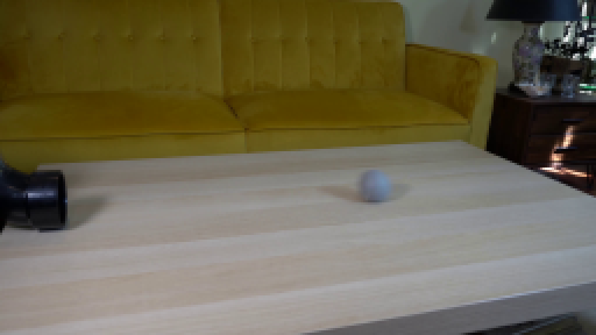
视觉工具实际返回图片 2
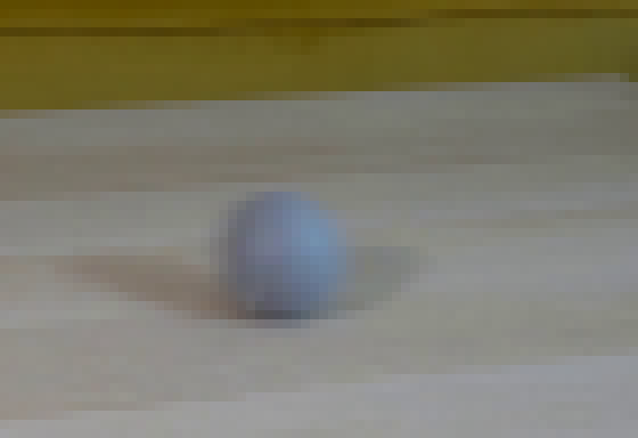
视觉工具实际返回图片 3

视觉工具实际返回图片 4
视觉工具实际返回图片 5
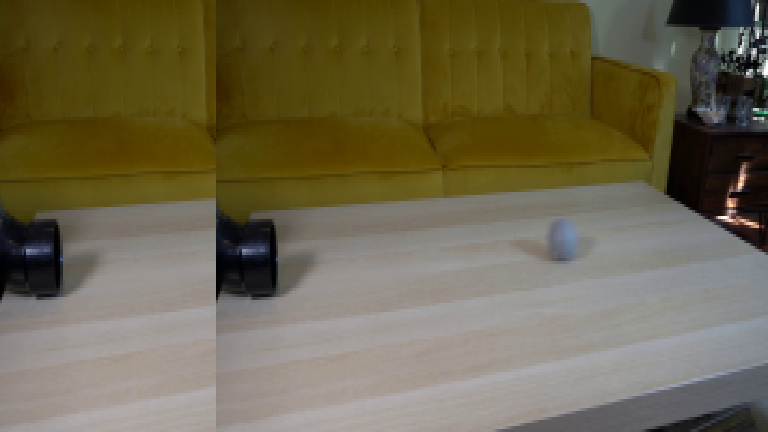
视觉工具实际返回图片 6
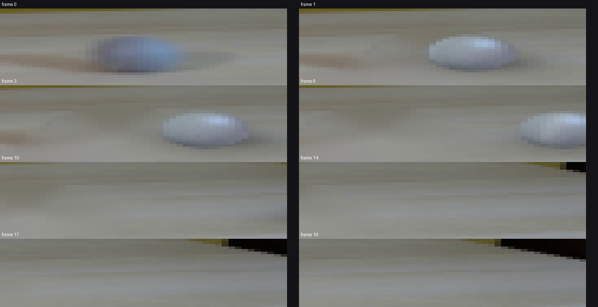
视觉工具实际返回图片 7
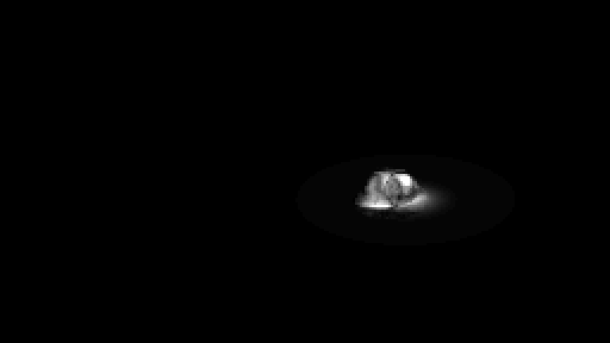
视觉工具实际返回图片 8
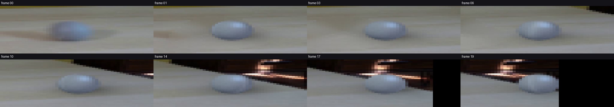
视觉工具实际返回图片 9
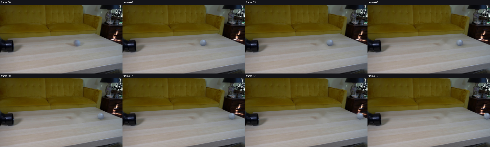
保存候选 3 份；完成命令 31 次；可验证图片返回 9 张。原始 API 响应与完整日志保留在本地。